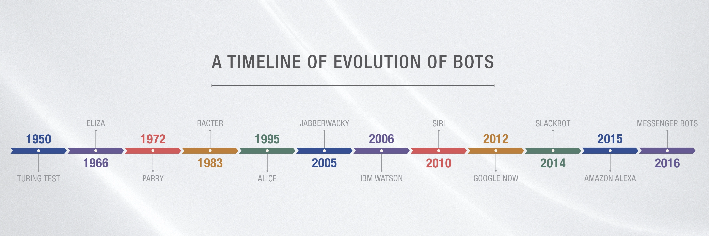

WHAT IS GENERATIVE AI
What is generative AI? Everything you need to know Generative AI (GenAI) is a type of Artificial Intelligence that can create a wide variety of data, such as images, videos, audio, text, and 3D models. It does this by learning patterns from existing data, then using this knowledge to generate new and unique outputs. GenAI is capable of producing highly realistic and complex content that mimics human creativity, making it a valuable tool for many industries such as gaming, entertainment, and product design. Recent breakthroughs in the field, such as GPT (Generative Pre-trained Transformer) and Midjourney, have significantly advanced the capabilities of GenAI. These advancements have opened up new possibilities for using GenAI to solve complex problems, create art, and even assist in scientific research.

THE POWER OF GENERATIVE AI
What is generative AI? Everything you need to know Generative AI (GenAI) is a type of Artificial Intelligence that can create a wide variety of data, such as images, videos, audio, text, and 3D models. It does this by learning patterns from existing data, then using this knowledge to generate new and unique outputs. GenAI is capable of producing highly realistic and complex content that mimics human creativity, making it a valuable tool for many industries such as gaming, entertainment, and product design. Recent breakthroughs in the field, such as GPT (Generative Pre-trained Transformer) and Midjourney, have significantly advanced the capabilities of GenAI. These advancements have opened up new possibilities for using GenAI to solve complex problems, create art, and even assist in scientific research.
Examples of Generative AI
Data augumentation is a process of generating new training data by applying various image transformations such as flipping, cropping, rotating, and color jittering.
Video Generation involves deep learning methods such as GANs and Video Diffusion to generate new videos by predicting frames based on previous frames.
Text Generation involves using machine learning models to generate new text based on patterns learned from existing text data.
Image Generation is a process of using deep learning algorithms such as VAEs, GANs, and more recently Stable Diffusion, to create new images that are visually similar to real-world images.
Generative AI Chat-Bots
Chatbots are the heart of conversational intelligence within an organization. However, chatbots are now evolving rapidly amid all the excitement of OpenAI's generative AI innovation like ChatGPT, and the transformative version of intelligent AI chatbots, revolutionizing the way businesses interact with customers. Many business leaders believe that this evolution of simple rule-based chatbots to the smart generative AI chatbots, is a way forward to winning customer experience (CX), greater innovation, increased productivity, and better conversational intelligence. Also, the transformative capability of mimicking human-like responses in real-time marks a significant turning point in the realms of traditional chatbots-powered conversations.
The great
evolution of chatbots
From scripted responses to
intelligent human-like conversations
The virtually assisted conversational bots, called chatbots, have come a long way since their inception in 1966. The launch of first-ever chatbot named Eliza by Joseph Weizenbaum at MIT Artificial Intelligence Laboratory had marked a significant milestone towards frictionless customer interaction. Following the lead, the early rule-based conversational chatbots like Parry and A.L.I.C.E enabled organizations to transform their CX capabilities by delivering response to predefined commands in real-time.
However, these early chatbots failed miserably because
- They didn't use artificial intelligence, cognitive perception, and machine learning effectively
- Lack ability to handle complex queries, plausible customer inquiries, and meaningful human conversations.
- They followed a rule-based decision tree with zero possibility of pre-training
- Inability to understand emotions and resolve personalized issues
Generative AI empowering chatbots with contextual intelligence
Generative AI unlocks a new frontier of innovation in customer engagement experience at the intersection of machine learning, predictive models, and large language models to generate human-like text, images, and even music outputs based on patterns and human prompts. Businesses across all industries are seeing Generative AI as an next-gen approach to artificial intelligence, enabling them to automate both mundane and complex tasks. The generative pre-trained transformers (GPT) models like OpenAI’s ChatGPT, BARD, and other machine learning models have been a game-changer in the realms of traditional chatbots for companies as they converse more convincingly with users by generating a structured human-sounding response to a natural language query. As a result, companies get valuable insights for better decision making capabilities while increasing process efficiency and delivering more personalized customer experiences. What’s more? Unlike rule-based systems, these generative AI chatbots are powered by intelligent algorithms and large language processing capabilities, which make them smart enough to make processes agile to drive innovation and greater operational efficiencies in real-time.